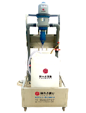
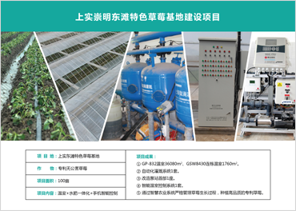
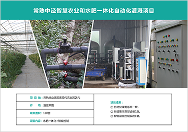

让农民轻松起来，
让消费者健康起来！
国兴农是谁
帮你增值增收
合作的好处
成功案例
首页
GAP种植方案
智慧农业系统
质量安全追溯
农产品品牌策划
农产品销售
关于国兴农
联系国兴农
您当前位置 > 首页 > 智慧农业系统 > 水肥一体化
智慧农业系统
智能温室
水肥一体化
智能控制
项目规划和申报
国兴农提供可以放心赚钱的产品
首部系统建设 >>
1.增压系统
: 安装1+N台增压泵
潜水泵
卧式离心泵
2.变频控制系统
: 可匹配多台增压泵
ABB恒压变频器
3.过滤系统
: 三级过滤，水质优良
地下管网 >>
PVC给水管
PE给水管
灌溉器 >>
管上式滴头
微喷头
吊喷旋转喷头
高压摇臂喷头
压力补偿式滴头
滴管
压力补偿式滴灌管
压力补偿式滴灌带
微喷带
薄壁滴灌管
索姆式滴灌管
压力指示器
施肥系统 >>
比例式施肥泵
施肥增压泵
比例式施肥机

移动施肥库
成功案例
点击查看更多

点击查看更多
点击查看更多

点击查看更多
点击查看更多
点击查看更多
点击查看更多
点击查看更多
点击查看更多
点击查看更多
点击查看更多
点击查看更多